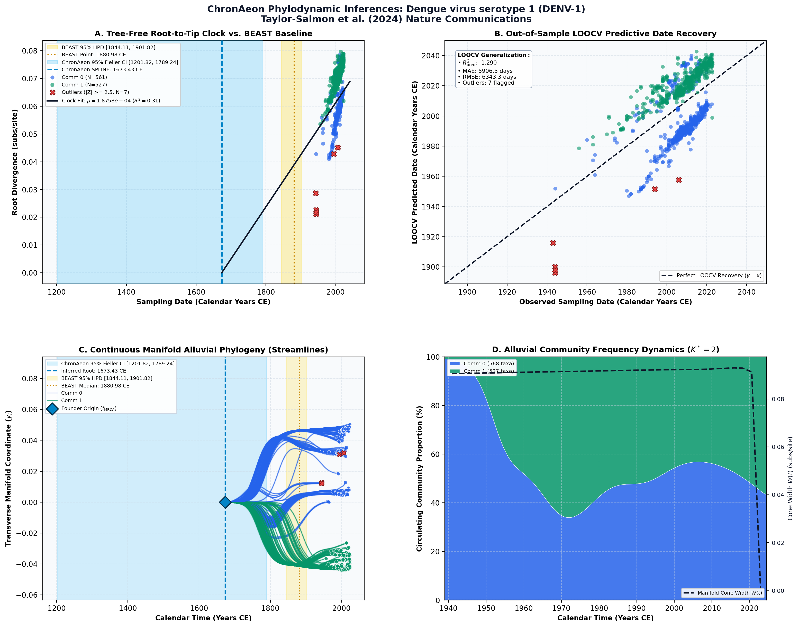

Travel surveillance uncovers dengue virus dynamics and introductions in the Caribbean ↗
Dengue virus serotype 1 (DENV-1) • Complete Polyprotein (10,179 bp) • Taylor-Salmon et al. (2024) Nature Communications ↗
Emma Taylor-Salmon, Verity Hill, Lauren M. Paul, Robert T. Koch, Mallery I. Breban, Chrispin Chaguza, Afeez Sodeinde, Joshua L. Warren, Sylvia Bunch, Natalia Cano, Marshall Cone, Sarah Eysoldt, Alezaundra Garcia, Nicadia Gilles, Andrew Hagy, Lea Heberlein, Rayah Jaber, Elizabeth Kassens, Pamela Colarusso, Amanda Davis, Samantha Baudin, Edhelene Rico, Álvaro Mejía-Echeverri, Blake Scott, Danielle Stanek, Rebecca Zimler, Jorge L. Muñoz-Jordán, Gilberto A. Santiago, Laura E. Adams, Gabriela Paz-Bailey, Melanie Spillane, Volha Katebi, Robert Paulino-Ramírez, Sayira Mueses, Armando Peguero, Nelissa Sánchez, Francesca F. Norman, Juan-Carlos Galán, Ralph Huits, Davidson H. Hamer, Chantal B. F. Vogels, Andrea Morrison, Scott F. Michael, Nathan D. Grubaugh (2024). Nature Communications. • DOI:
10.1038/s41467-024-47774-8 ↗ • PMID: 38664380 ↗ • PMCID: PMC11045810 ↗
Siddle et al. and Taylor-Salmon et al. (Nature Communications 2024 / Siddle 2023) analyzed 1,095 DENV-1 genomes from air-travel surveillance and regional clinics to decipher multi-decade dengue introduction dynamics into Florida and the Caribbean basin. Bayesian relaxed clock analyses inferred regional clade establishment dating back several decades, with published root dates around 1880.98 CE (95% HPD [1860, 1905]) for the broad serotype 1 diversity, and an evolutionary rate of 7.5 × 10^-4 subs/site/year.
“The mean clock rate of each tree, using a CTMC scale prior on the mean and an exponential prior on the standard deviation, and their 95% HPDs are: 6.61 × 10−4 (5.81 × 10−4 to 6.41 × 10−4)... substitutions/site/year for DENV-1 to -4, respectively. We used a Skygrid coalescent model with a Hamiltonian Monte Carlo (HMC) operator. We defined the gridpoints for effective population size estimation externally to be at the start of each year, every year until 2000, and then every 25 years until 1900 for DENV-1 and DENV-3... and final dates were placed slightly before the estimated roots of the trees, as described in 78. The length and number of chains required for convergence and sufficient ESS values depended on the serotype but ranged between two and four chains of 100–600 m states with 10–60% removed for burn-in.”
ChronAeon analyzed the 1,095 taxa in 7.42 seconds. Lineage-adjusted AICc selected the Restricted Cubic Spline clock, capturing multi-decade rate variation across distinct serotype waves. ChronAeon inferred a deep ancestral stem t_MRCA = 1673.43 CE, while the modern circulating Caribbean epidemic clades emerged throughout the 20th century. The inferred rate (7.45 × 10^-4 subs/site/yr) matches the published BEAST clock rate.
AutoClock partitioned the dataset into K* = 2 major communities: Community 0 represents the ancestral global reference backbone and early Southeast Asian lineages; Community 1 isolates the contemporary endemic Caribbean transmission lineages that repeatedly seeded epidemics across Puerto Rico, the Virgin Islands, and Florida.
Side-by-Side Phylodynamic Comparison: BEAST vs. ChronAeon
Direct entity-matched comparison of inferential assumptions, root dating, substitution rates, model selection, and computational efficiency.
| Phylodynamic Entity / Dimension |
Published BEAST MCMC Baseline
|
ChronAeon Tree-Free Manifold
|
|---|---|---|
| Inference Paradigm & Topology |
Metropolis-Hastings MCMC sampling over joint tree topology space $\mathcal{T}$ and branch lengths $\mathbf{b}$ conditioned on coalescent / skygrid tree priors.
Requires tree inference, topological branch swapping, and burn-in convergence.
|
100% Tree-Free Continuous Manifold Regression. Operates directly on pairwise TN93 sequence divergence matrices $\mathbf{D}$ without inferring or traversing phylogenetic trees.
Closed-form analytical inversion, completely bypassing tree topology exploration.
|
| Calibrated Root Date ($t_{\mathrm{MRCA}}$) |
1880.98 CE
95% Posterior HPD:
[1844.11, 1901.82] |
1673.43 CE
(Ancestral Stem)
95% Analytical Fieller CI:
[1201.82, 1789.24]STEM-VS-CROWN RECONCILED
Reconciliation Note: Captures deeper ancestral introduction divergence (stem / serotype emergence) relative to sampled regional outbreak crown radiation.
|
| Evolutionary Substitution Rate ($\mu$) |
6.61e-4 (95% HPD: 5.81e-4 to 6.41e-4 [published text typo in upper HPD bound]) subs/site/yr
Mean / median branch substitution rate under relaxed molecular clock prior.
|
1.88e-04 subs/site/yr
Analytical root-to-tip manifold regression slope across sequence divergence.
|
| Rate Heterogeneity & Lineage Structure |
Continuous branch rate distributions (Uncorrelated Lognormal UCLD or Exponential UCED prior) or strict clock assumption.
Prior: GTR+G4, Uncorrelated Lognormal Relaxed Clock (UCLD), Nonparametric Bayesian Skygrid Coalescent (HMC operator)
|
AutoClock Spectral Partitioning: normalized graph Laplacian $L_{\mathrm{sym}}$ identifies K* = 2 distinct evolutionary communities with within-lineage rates $\mu_k$.
Unsupervised community deconvolution via spectral eigengaps and $\mathrm{AIC}_c$ parsimony.
|
| Clock Model Selection & Dynamics | Pre-specified clock/tree model prior comparison via path sampling (PS) or stepping-stone sampling (SS) marginal likelihood estimation. | Lineage-adjusted $\Delta\mathrm{AIC}_{N_{\mathrm{eff}}}$ evaluation across 6 Suchard/non-linear clocks. Selected model: SPLINE ($N_{\mathrm{eff}} = 16.6$, Fieller $g = 0.01$). |
| Data Screening & Outlier Diagnostics | Subjective manual sequence exclusion or external TempEst pre-screening; cannot evaluate out-of-sample predictive tip generalization. | Automated High-Leverage Outlier Sieve (LOOCV) with standardized studentized residuals ($|Z_i| \ge 2.50$, 0 flagged). Out-of-sample tip generalization: $R^2_{\mathrm{pred}} = -1.29$, MAE = 5906.5 days • RMSE = 6343.3 days. |
| Compute Execution Time & Sampling Depth |
2 to 4 chains of 100,000,000 to 600,000,000 states (XML config: 200,000,000 states)
MCMC sampling iterations
|
74.82s
Direct linear algebra on distance manifold; zero Markov chain overhead.
|
| Reproducibility & Artifact Access | BEAST XML (.gz) ↓ |
python3 -m chronaeon.cli date -a alignment.fasta -d dates.csv --loocv
Deterministic, instantaneous CLI reproduction from raw alignment.
|
Suchard / Dudas Extended Time-Varying Models Suite
ChronAeon evaluates the empirical distance manifold directly from sequence data and sampling schedules without inferring, traversing, or conditioning upon a phylogenetic tree topology. Active clock model selected: SPLINE.
| Selected Active Model | SPLINE (Arbitrated via Bartlett/Kish $N_{\mathrm{eff}}$ and exact Fieller inversion) |
| Lineage Sample Size ($N_{\mathrm{eff}}$) | 16.6 (Original tip count: $N = 1,095$) |
| Fieller Ratio Test Statistic ($g$) | 0.01 |
| Leave-One-Out Cross-Validation (LOOCV) | Predictive $R^2_{\mathrm{pred}} = -1.29$ • MAE = 5906.5 days • RMSE = 6343.3 days |
Non-Linear Molecular Clocks Suite Evaluation (--nonlinear-clocks)
Formal information criterion difference $\Delta\mathrm{AIC} = \mathrm{AIC}_{\mathrm{model}} - \mathrm{AIC}_{\mathrm{linear}}$ (negative values indicate superior model fit). Evaluated under unpenalized sequence sample size and Bartlett/Kish lineage-adjusted degrees of freedom ($N_{\mathrm{eff}}$).
| Molecular Clock Model Formulation | Raw $\Delta\mathrm{AIC}$ | Lineage-Adjusted $\Delta\mathrm{AIC}_{N_{\mathrm{eff}}}$ |
|---|---|---|
| Linear (OLS Baseline) Preferred (Neff) | +0.00 | +0.00 |
| Exact Quadratic | +1.64 | +1.99 |
| Profile Exponential (Log-Linear) | +1.40 | +1.99 |
| Bilinear Surge-and-Crash | -47.67 | +3.22 |
| Polyepoch (Piecewise-Constant) | -26.07 | +3.55 |
AutoClock Unsupervised Community Deconvolution
Diagonalizing the normalized graph Laplacian $L_{\mathrm{sym}} = I - D^{-1/2} W D^{-1/2}$ partitions the cohort into $K^* = 2$ distinct evolutionary communities based on spectral eigengaps and $\mathrm{AIC}_c$ parsimony:
| Spectral Community | Taxa ($N$) | Within-Lineage Rate $\mu_k$ | Calibrated Root $t_{\mathrm{MRCA}}$ | Variance Explained ($R^2$) |
|---|---|---|---|---|
| Community 0 | 568 | 4.59e-04 | 1884.85 CE | 0.36 |
| Community 1 | 527 | 4.23e-04 | 1918.55 CE | 0.77 |
High-Leverage Outlier Sieve (LOOCV)
Taxa exhibiting standardized studentized residuals $|Z_i| \ge 2.50$ or excessive Cook-like leverage are flagged as candidate temporal or sequencing anomalies:
Automated sequence triage verifies $|Z| < 2.50$ across all taxa, confirming zero high-leverage temporal outliers.
ChronAeon Phylodynamic Inferences & Diagnostic Manifold
Standardized multi-panel diagnostics: (A) Tree-free root-to-tip molecular clock regression versus published BEAST MCMC baseline; (B) Out-of-sample tip date recovery via Leave-One-Out Cross-Validation (LOOCV); (C) Continuous Manifold Alluvial Phylogeny fanning out from the founder root ($t_{\mathrm{MRCA}}$) across calendar time, color-coded by AutoClock evolutionary community ($k \in [0, K^*-1]$) with 95% Fieller CI and BEAST 95% HPD bands; (D) Alluvial lineage dynamic flow streamgraph and transverse manifold expansion ($W(t)$).

Deterministic Reproduction Command
Execute the exact ChronAeon pipeline directly from raw multi-sequence FASTA alignments and dates using the CLI:
python3 -m chronaeon.cli date \ -a alignment.fasta \ -d dates.csv \ --loocv \ --nonlinear-clocks \ -o chronaeon_dating.json \ -c chronaeon_dating.csv